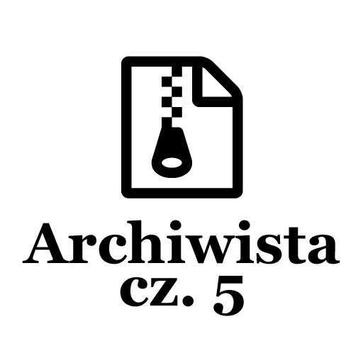
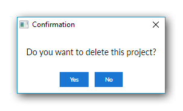
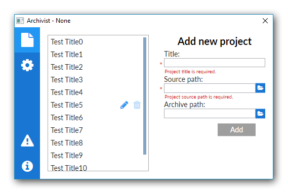

Post archive
Archiwista [cz. 5 - Główny wygląd aplikacji cd.]

Ostatnio zrobiłem główny widok aplikacji, tym razem pora go dopracować. Mam tutaj na myśli poprawienie wyświetlania dodanych projektów. Zwykła lista nie wyglądała zachęcająco. Drugą rzeczą do dodania będzie zaznaczenie w menu, w której zakładce się aktualnie znajdujemy.
Lista projektów
Aktualnie lista projektów korzysta ze zwykłego ListView zawierającego TextBlock jako wpis projektu. Nie byłem zadowolony z takiego rozwiązania więc postanowiłem stworzyć nowy wygląd od podstaw.
Wygląd rekordu
Każdy rekord na liście będzie miał tytuł projektu, przycisk umożliwiający jego edycję oraz przycisk pozwalający usunąć dany wpis. Aby przyciski nie rzucały się w oczy napiszę specjalny styl, który będzie zmieniał ich widoczność w zależności od pozycji myszki. Dzięki temu będą wyświetlane tylko te przyciski nad którymi jest myszka.
Jednym z problemów, które ciągnie za sobą takie rozwiązanie jest problem z przypisaniem przyciskom odpowiednich komend. Obecnie listę projektów zawiera główny ViewModel odpowiedzialny za wygląd tej podstrony. Każdy rekord zawiera własny ViewModel opisujący rekord, usunięcie danego rekordu z listy w innym ViewModelu bezpośrednio jest niemożliwe. W tym celu zastosowałem mechanizm zdarzeń i dodałem trzy eventy: OnEditButtonClick, OnDeleteButtonClick, OnActiveProjectClick. Dzięki temu podczas tworzenia rekordów listy mogę przypisać metody, które mają się wywołać w danych okolicznościach. Takim sposobem stworzyłem komunikację wsteczną, która umożliwi usunięcie odpowiedniego rekordu z listy, edycję jego zawartości czy też aktywowanie wybranego projektu.
Lista
Pierwszym krokiem do stworzenia listy projektów będzie skorzystanie z ItemsControl, które doskonale się sprawdzi w tym przypadku. Ustawię panel w którym wyświetlają się rekordy na StackPanel w orientacji pionowej oraz wzorzec wpisu na szablon rekordu stworzonego wcześniej. Całość opakuje w ScrollViewer który dostarczy możliwości scrollowania zawartości ItemsControl oraz Border, która zapewni ramkę dookoła listy.
<!-- ... -->
<!-- Projects list -->
<Border Grid.Column="0"
Margin="15"
Width="200"
BorderThickness="1"
BorderBrush="DarkGray">
<ScrollViewer VerticalScrollBarVisibility="Auto"
MaxHeight="268">
<ItemsControl ItemsSource="{Binding Projects}">
<!-- Set items panel to StackPanel in vertical orientatnion-->
<ItemsControl.ItemsPanel>
<ItemsPanelTemplate>
<StackPanel Orientation="Vertical"/>
</ItemsPanelTemplate>
</ItemsControl.ItemsPanel>
<!-- Set items template as ProjectItemControl -->
<ItemsControl.ItemTemplate>
<DataTemplate>
<local:ProjectItemControl DataContext="{Binding}"/>
</DataTemplate>
</ItemsControl.ItemTemplate>
</ItemsControl>
</ScrollViewer>
</Border>
<!-- ... -->Message box
Użytkownik naciskając przycisk usuwający dany projekt powinien otrzymać powiadomienie o tym, co zamierza zrobić. Ostatnią rzeczą jaką chcemy to usunąć sobie przez przypadek projekt, nad którym pracowaliśmy. W tym celu chciałem wykorzystać MessageBox. Niestety komunikat pojawia się na środku ekranu a nie - tak jakbym ja to chciał - na środku aplikacji, niestety nie ma możliwości zmiany lokalizacji początkowej. Dlatego też postanowiłem stworzyć własną wersję MessageBox, która będzie wyświetlana na środku rodzicielskiego okna i będzie ostylowana jak reszta aplikacji.
{kind=link}

Scroll bar
Prawie wszystko skończone, ale jednak duży szary pasek do przesuwania projektów nie wygląda zachęcająco, dlatego zdecydowałem się go zmodyfikować. Dodałem styl dla ScrollBar, który wygląda dużo lepiej na tle całej aplikacji.
Menu
Kiedy użytkownik naciśnie przycisk, aby przejść do odpowiedniej podstrony aplikacji wypadałoby, żeby w jakiś sposób to sygnalizować. Prostym rozwiązaniem byłoby napisanie ValueConvertera, który zamieniłby jego tło w zależności od zmiennej Page na kolor odpowiadającemu aktywnemu przyciskowi. Niestety takie rozwiązanie nie będzie działało, ponieważ animacja przycisku za każdym razem będzie aktualizować kolor, który jest ustalony w jego stylu. Rozwiązaniem, jakie wybrałem jest otoczenie każdego przycisku w Border gdzie ustawię tło wcześniej opisanym Converterem. Aby jednak całość działała, trzeba zmodyfikować aktualny styl. Przycisk znajduje się nad obramowaniem, nie jest przezroczysty, przez co widzimy kolor tła przycisku a nie kolor obramowania. Rozwiązaniem jest zmiana podstawowego koloru na wartość RGBA zawierającego kanał przezroczystości alpha i ustawić jego wartość na maksimum. Dzięki temu będziemy widzieć kolor pod przyciskiem. Cała aplikacja prezentuje się następująco:
{kind=link}

Kończąc
Na chwilę obecną uznaję widok projektów za skończony. Możliwe, że w międzyczasie poprawię to i owo, ale będą to raczej drobne zmiany o których nie będę robił wpisów. Pozostało stworzenie pozostałych wyglądów aplikacji po czym w końcu będę mógł zabrać się za pisanie logiki biznesowej.
Cały kod aplikacji można zobaczyć na moim koncie github [icon name="github" size="lg"] /kkolodziejczak/Archivist